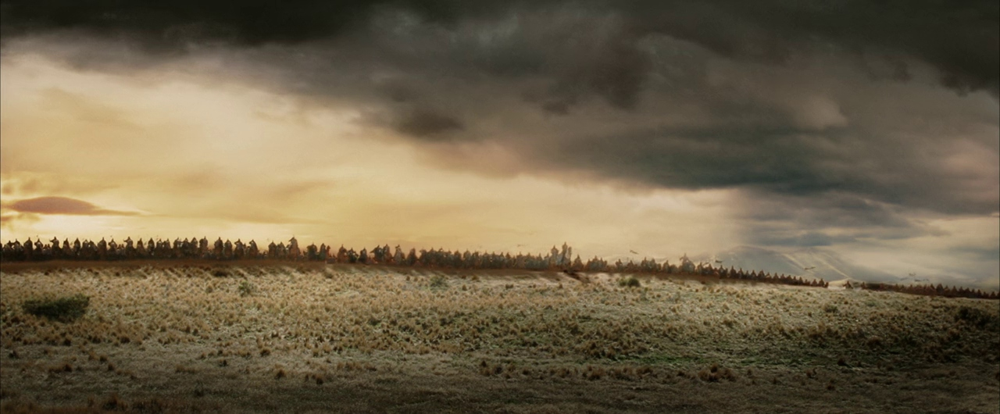
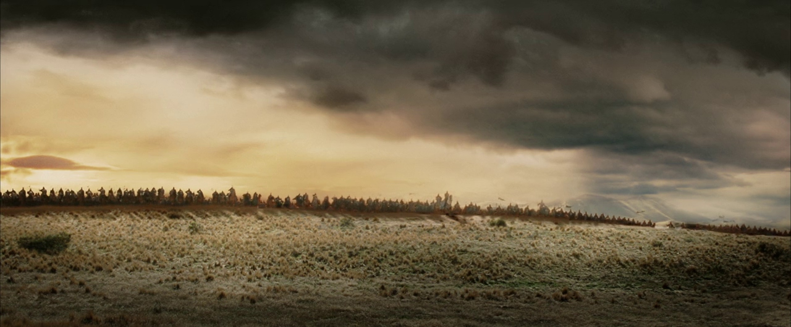

Lord of the Rings: The Return of the King Review
The Lord of the Rings: The Return of the King is more than just the final chapter of a beloved trilogy—it is a cinematic event that redefined the fantasy genre. Directed by Peter Jackson and based on J.R.R. Tolkien’s legendary work, the film brings the epic struggle for Middle-earth to its climactic resolution. With Sauron’s forces tightening their grip and the fate of the world hanging by a thread, the film follows multiple storylines converging on a final battle between good and evil.
Frodo Baggins (Elijah Wood) and Samwise Gamgee (Sean Astin) continue their treacherous journey to Mount Doom, facing the ever-growing temptation of the One Ring and the deceitful presence of Gollum (Andy Serkis). Meanwhile, Aragorn (Viggo Mortensen) steps into his destiny as the rightful king of Gondor, leading the last stand against Sauron’s overwhelming army. As war erupts across Middle-earth, friendships are tested, sacrifices are made, and the journey that began in the peaceful Shire reaches its defining moment. With breathtaking visuals, masterful storytelling, and an emotional weight that lingers long after the credits roll, The Return of the King is a testament to the power of epic filmmaking.
The Fellowship’s Final Stand
As the war for Middle-earth reaches its peak, the cast of The Return of the King delivers some of the most powerful performances in fantasy cinema. Elijah Wood’s portrayal of Frodo captures the toll of carrying the One Ring, his physical and emotional exhaustion laid bare in every scene. By his side, Sean Astin’s Samwise Gamgee emerges as the true heart of the story, demonstrating unwavering loyalty and courage as he carries both Frodo and their mission forward.
Viggo Mortensen’s Aragorn embraces his destiny, rallying the free peoples of Middle-earth for a final stand against Sauron. His transformation from an exiled ranger to a noble king is one of the film’s most satisfying arcs, culminating in an unforgettable speech before the Black Gate. Meanwhile, Ian McKellen’s Gandalf remains a pillar of wisdom and strength, guiding Gondor’s defenses and confronting the nightmarish forces of Mordor.
Beyond the main trio, the supporting cast shines in their own defining moments. Miranda Otto’s Éowyn delivers a legendary battle scene, proving that courage knows no bounds. Orlando Bloom’s Legolas and John Rhys-Davies’ Gimli maintain their dynamic chemistry, balancing humor and heroism. But one of the most remarkable performances belongs to Andy Serkis as Gollum, whose final descent into obsession provides one of the most chilling moments in the film. Every actor brings their character’s journey to a fitting conclusion, ensuring that the film’s emotional stakes are just as gripping as its large-scale battles.
 

I Stand Against the Shadow.
The Return of the King is a film that thrives on its themes of fate, duty, and the will to resist overwhelming darkness. While earlier films explored personal growth and the bonds of friendship, this final chapter delves into the responsibility that comes with power and the courage required to stand against evil.
Aragorn embodies this theme more than any other character. For much of the trilogy, he doubts whether he is worthy of leading, choosing exile over the throne. But as Gondor faces its greatest threat, he recognizes that leadership is not about entitlement—it is about answering the call when others cannot. His decision to march on the Black Gate, knowing it may be a death sentence, is a testament to true heroism: not the absence of fear, but the choice to fight despite it.
Frodo and Sam’s journey to Mount Doom highlights another core theme—the burden of sacrifice. Frodo is physically and mentally shattered by the Ring’s influence, yet he continues forward, knowing that his suffering is necessary for the greater good. Sam, on the other hand, represents the everyday hero, someone who does not seek glory but refuses to abandon those he loves. Their journey reinforces the idea that heroism is not about strength alone, but resilience in the face of despair.
The Battle for Middle-earth.
Few films capture the sheer scale of war like The Return of the King. The Battle of Pelennor Fields is one of the most breathtaking sequences ever put to screen, combining sweeping cinematography, incredible practical effects, and cutting-edge CGI to bring Middle-earth’s greatest conflict to life. From the moment the beacons of Gondor are lit to the arrival of the Rohirrim, the film builds tension masterfully, making every clash of swords and every charge across the battlefield feel monumental.
The charge of the Rohirrim is one of the most iconic moments in the trilogy, a perfect blend of cinematography and music. As King Théoden delivers his final speech, the tension gives way to a triumphant, heartbreaking charge that captures the true cost of war. Meanwhile, the arrival of the Army of the Dead brings an eerie, almost mythical quality to the battle, a reminder of the ancient powers that still linger in Middle-earth.
What makes these battles more than just spectacle is their emotional weight. Every fight carries personal stakes, whether it’s Éowyn’s duel with the Witch-king, Aragorn’s decision to march on the Black Gate, or Frodo’s struggle inside Mount Doom. Unlike many war films, The Return of the King never loses sight of its characters, ensuring that every moment of combat has meaning beyond its visuals.
The Film That Ruled Them All.
The Return of the King is not just a technical and storytelling triumph—it is one of the most decorated films in history. At the 76th Academy Awards, it won all 11 Oscars it was nominated for, including Best Picture, Best Director for Peter Jackson, and Best Adapted Screenplay. This historic sweep cemented its place as the only fantasy film to ever win Best Picture, proving that the genre could be taken seriously at the highest levels of filmmaking.
Beyond the awards, the film’s impact is immeasurable. It set a new standard for epic storytelling, inspiring countless films and series in the years that followed. From its massive battles to its intimate character moments, every aspect of the film was crafted with painstaking care, ensuring its legacy would endure for generations.
Howard Shore’s Oscar-winning score deserves special mention. His compositions, from the triumphant “The Ride of the Rohirrim” to the deeply emotional “Into the West,” elevate every scene, making the film not just a visual masterpiece but an auditory one as well. Few scores capture the soul of a story as perfectly as Shore’s, and his work remains one of the greatest achievements in film music.
Verdict
The Lord of the Rings: The Return of the King is the gold standard for cinematic conclusions. It brings every storyline to a powerful close, delivering unforgettable battles, heart-wrenching farewells, and a sense of finality that few franchises ever achieve. Peter Jackson’s direction, the cast’s performances, and the technical achievements make it not just a great fantasy film, but one of the greatest films ever made.
Even after two decades, its themes of hope, sacrifice, and the enduring fight against darkness remain as powerful as ever. Whether you watch it for its sweeping action, its emotional depth, or its rich storytelling, The Return of the King is a film that will stand the test of time. A masterpiece in every sense, it is the ending that Middle-earth—and cinema—deserved.